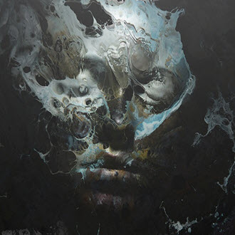
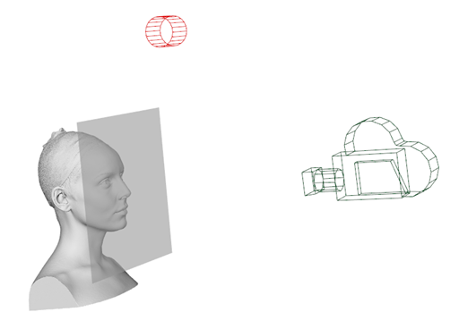
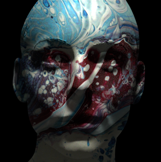
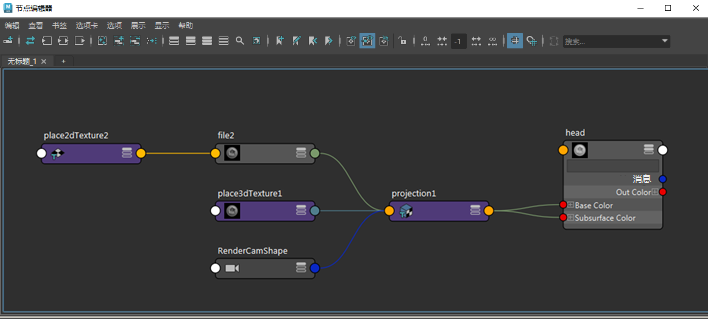
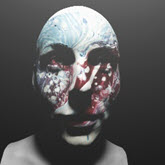
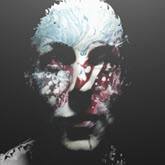
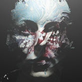
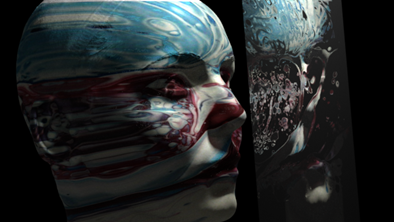
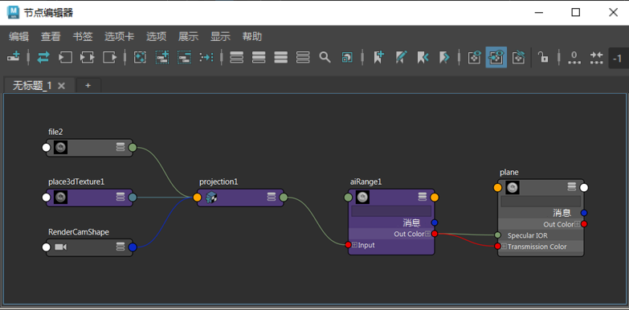

在本教程中，我们将探讨如何创建应用于头部扫描模型的抽象、绘画效果，以生成幽灵般的肖像。在本教程中，我们将专门使用 standard_surface 着色器，结合使用范围*和 *camera_projection 着色器，以产生这种效果。在本教程中需要使用头部模型。有关免费使用的头部扫描模型示例，请单击此处。在本教程中，要求您使用自己的纹理。有关使用此技术的更多示例，请单击此处和此处。


头部模型渲染（不含平面）

头部着色器
创建另一个 standard_surface 着色器，并将其指定给平面。
将 transmission_weight 增加到 0.9 左右。
通过范围*着色器，将相同的投影纹理连接到 *specular_IOR 和 transmission_color*。范围*着色器用于定义纹理的折射量，并可用于微调效果。
将范围*着色器的 *output_max 增加到 6 左右，并将“输入最大值”(Input Max)*增加到 2 左右。尝试使用范围*着色器的其他值以获得想要的效果。
|  |  |  |
| 输出最大值：0 | 输出最大值：1（默认值） | 输出最大值：6 |

折射位于其后方的头部的平面

平面着色器